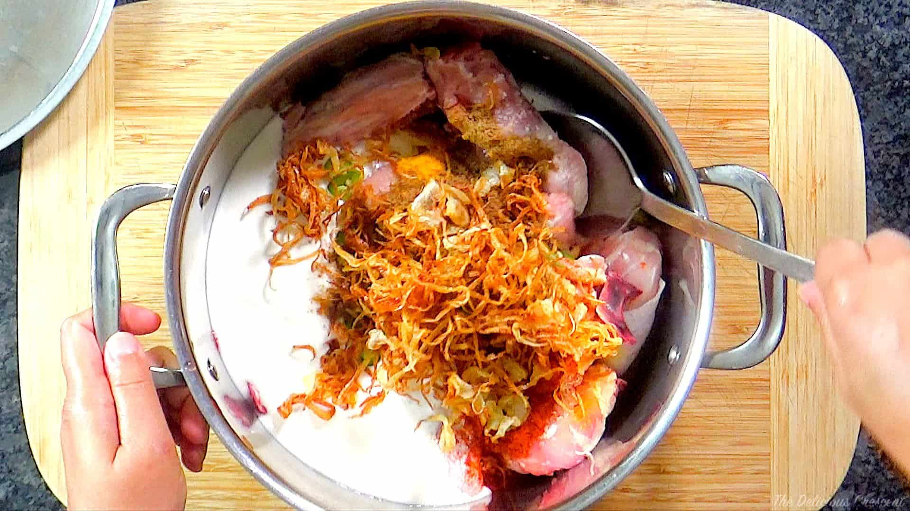
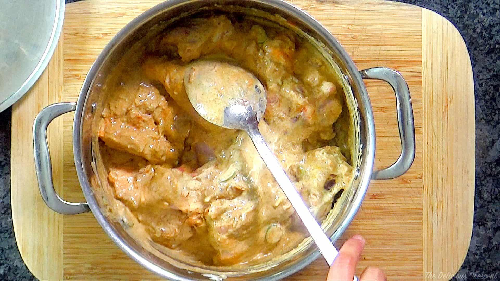
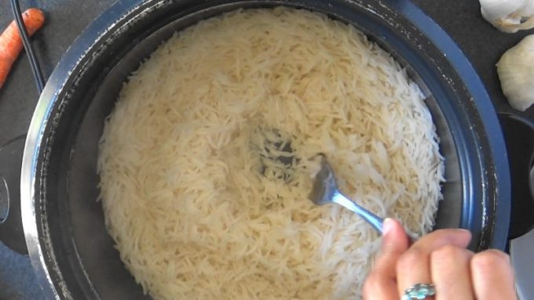
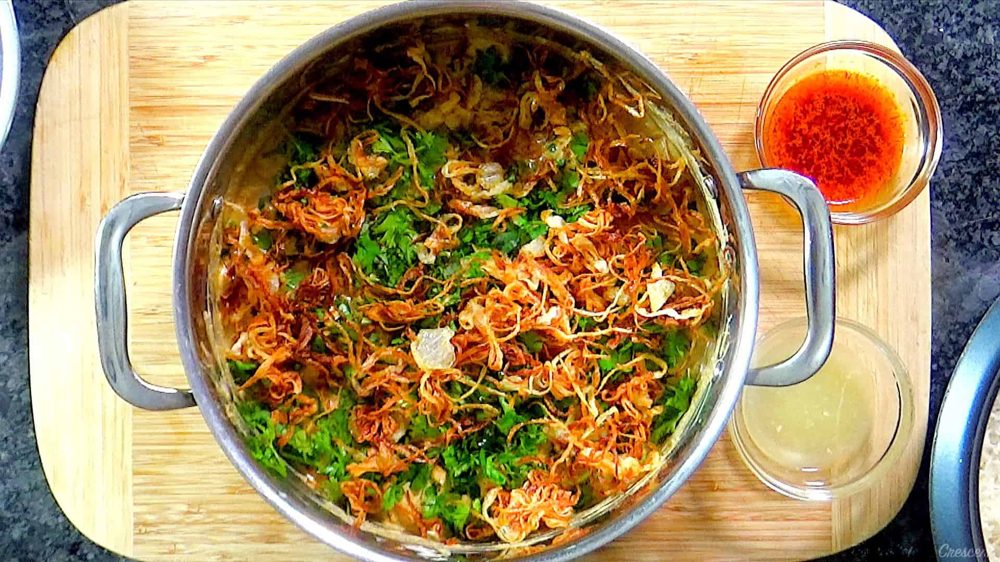
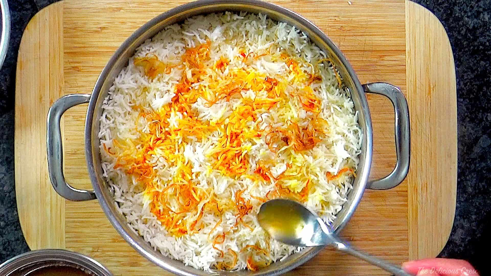
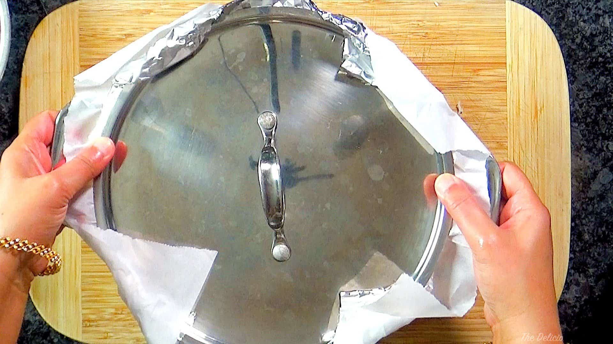

Fry Onions
- Heat oil at medium high in a wide frying pan. If you place your palm about 3 inches over the surface of oil, you should feel the heat. Or use a candy/fry thermometer.
- Fry onions in batches. Do not crowd the pan.Fry until crisp light golden brown. Set aside.
Marinate Chicken
- In a large mixing bowl, combine chicken with all marinade ingredients and ⅓ of fried onions. 
-
Grind biryani spices in a spice grinder.
Add to chicken marinade and combine. Marinate for about 3 to 5 hours.

Tip Add yogurt, starting with ½ cup and increase as needed to ¾ cup. The mixture should be thick and not runny.
Cook Rice
- Rinse rice 4 to 5 times in lots of water until it is clear. Drain well. Soak ⅓ cup basmati rice in water for one hour. Save the rest.
- Bring 2¼ cups of water to a rolling boil in a rice cooker. Add ¾ teaspoon salt, 1½ tablespoons olive oil and whole spices (see note). Then add remaining 1⅔ cups basmati rice and stir. Let it cook just until all the water is absorbed 
- It is important to NOT let the rice steam until it is fully done. Just when all the water is well absorbed, transfer cooked rice immediately to another wide open pan. In my rice cooker the whole process takes about 15 to 20 minutes.
Assemble
- Transfer chicken with marinade to a 5-quart, wide, thick-bottomed and oven-proof cooking pot (9 to 10 inch diameter). Make sure there is not too much marinade around chicken pieces and that it is not runny.
- Scatter cilantro, mint, half the lemon juice and ½ tablespoon olive oil over the chicken and marinade.
Then scatter most of the fried onions.
 - Drain the soaked basmati rice very well and spread it over the fried onion layer. ( This raw soaked rice will get cooked with the juices from chicken).
- Next, layer all the cooked rice.
Top with remaining lemon juice, saffron water, fried onions and ghee.
Tip: If you prefer, you may pick out the whole spices from cooked rice before steaming.
Steam
-
Oven Method: Place one sheet of parchment paper, followed by one to two sheets of aluminum foil over the cooking pot. Place the lid tight over it.
Bake biryani in a preheated oven at 350ºF for one hour, until steam builds up well.
 - Stove-Top Method(Alternative):Heat the biryani at medium high for about 10 to 15 minutes and then reduce to low and cook for one hour until steam builds up well.
Serve
- Remove from oven or stove. Let it cool five minutes and gently mix rice and chicken. Using a spatula, mound the biryani on a serving plate, making sure to present the rice in various colors - white, yellow, orange and brown. Place some chicken pieces on the top. Scatter fried onions, herbs and extra saffron rice on top.
- Serve it with mirchi ka salan or Hyderabadi tomato egg curry and raita.
 "
"